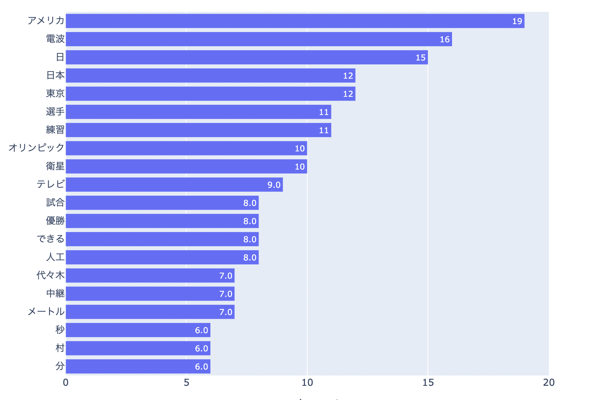
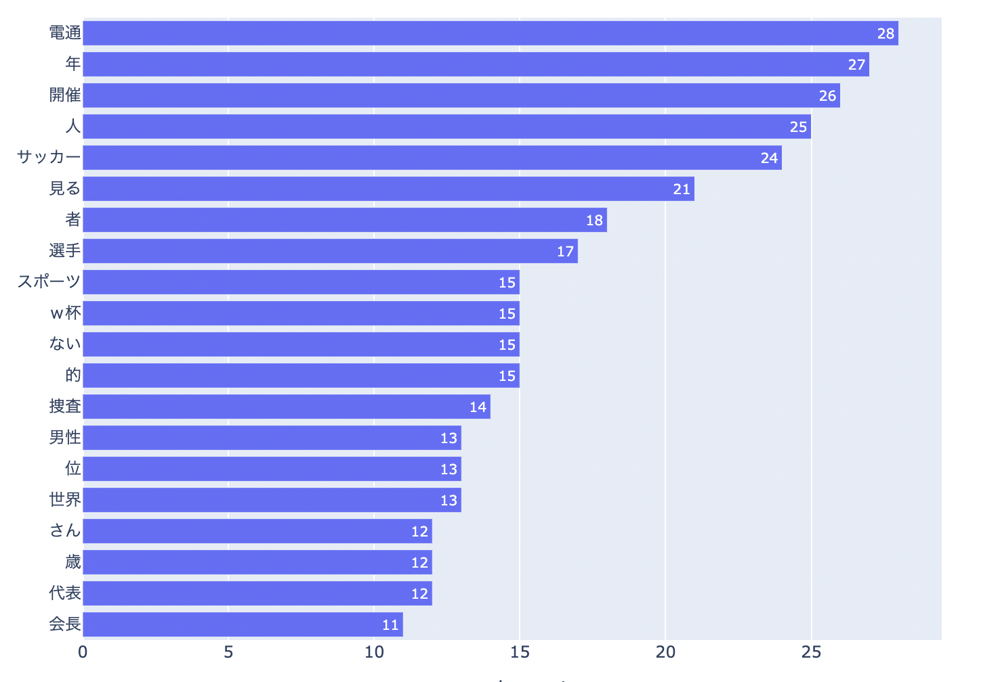

第8回 テキストマイニング
今回は、1964年の東京オリンピックの第一回大会と2021年の第二回大会の記事について分析していきます。
特に、今回は記事内に出てきた単語の数に着目して、分析してみました。
1.分析
・1964年

1964年のデータでは、人工衛星による大会の中継が行われたことから「衛星」や「中継」といった言葉が多く見られる。
また、東京オリンピックであったことから、もちろん、「東京」、「選手」、「試合」、「オリンピック」といった言葉が多く見受けられる。
さらに、当時の国際状況から「アメリカ」と他国についても多く記載され、初の東京オリンピックに際して、競技場も造られたため、
「代々木」といった地名も見られる。
・2021年

一方、2021年のデータでは、汚職事件があったこともあり、「電通」、「捜査」などといった単語が多く見受けられる。
また、サッカーW杯があったこともあり、「サッカー」、「W杯」といった言葉も記載されている。